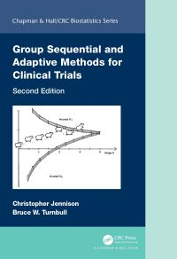
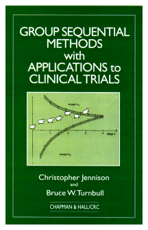

Department: Department of Mathematical Sciences
Job Title: Professor of Statistics
Telephone: +44 1225 385674
E-mail Address: C.Jennison@bath.ac.uk
Postal Address:
Book
Second edition
Group Sequential and Adaptive Methods for Clinical Trials by Christopher Jennison and Bruce W. Turnbull.

Click here to see some of the R code used to construct group sequential tests and to calculate their properties.
First edition
Group Sequential Methods with Applications to Clinical Trials by Christopher Jennison and Bruce W. Turnbull.

Click here to see some of the FORTRAN code used to construct group sequential tests and to calculate their properties.
We have found a few notable errata and we list these here.
Publications
Full list of publications: pdf file
Diabetes Research
I have been an investigator in the DIRECT research project, funded by the EU Innovative Medicines Initiative and the MASTERMIND research project, funded by the Medical Research Council.
Short courses
List of half-day, one-day and two-day short courses on Group Sequential and Adaptive Clinical Trials
Consultancy
I offer consultancy on the design and analysis of clinical trials.
Recent talks
Workshop by C. Jennison, M. Grayling and D. Robertson at PSI Conference, Belfast, June 2026, "Implementing ICH E20: Designing and Analysing Adaptive Clinical Trials" pdf file For the ICH E20 draft guidelines, see: pdf file
Talk at Central European Network (CEN) Conference, Warsaw, May 2026, "Estimation after an Adaptive Design" pdf file
Seminar at GSK, London, January 2026, "Designing an Adaptive Clinical Trial with Treatment Selection and a Survival Endpoint: Reflections on the GATSBY Study" pdf file
Tutorial by C. Jennison, B. W. Turnbull and V. Dragalin at Deming Conference, Atlantic City, December 2025, "Tutorial on ICH E20 Guidance on Adaptive Designs in Clinical Trials" pdf file
Keynote lecture at Deming Conference, Atlantic City, December 2025, "Optimising Group Sequential Designs: Where Frequentist meets Bayes" pdf file
Seminar at George Mason University, Washington, December 2025, "Designing an Adaptive Clinical Trial with Treatment Selection and a Survival Endpoint: Reflections on the GATSBY Study" pdf file
Presentation at EFSPI Regulatory Statistics Workshop, Basel, September 2025, "Comments on ICH E20: Adaptive Designs for Clinical Trials" pdf file
Talk at Cornell Celebration of Statistics and Data Science, Cornell University, September 2025, "Group Sequential and Adaptive Clinical Trial Designs: Achievements and Challenges" pdf file
Contribution to Analytics Landscape Seminar, Novartis, Basel, July 2025, "Comments on ICH E20: Adaptive Designs for Clinical Trials" pdf file
Poster at PSI conference, London, June 2025, "Sample Size Re-estimation: Exploding the Myths" pdf file
Talk at Workshop: Improving the EffIciency of Clinical Trials, From Methods to Practice, University of Bath, June 2025, "Optimising Group Sequential Designs: Where Frequentist meets Bayes" pdf file
Pub Lecture for Bath University Mathematical Society (BUMS), Bath, November 2024, "So You Want to be a Millionaire?" pdf file
21st Armitage Lecture, Cambridge, November 2024, "Peter Armitage's pioneering work: Laying the foundations for sequential medical trials" pdf file
Talk at PSI Conference, Amsterdam, June 2024, "Defining Good Guidelines for Futility Stopping based on Conditional Power or Predictive Power" pdf file
Talk at 8th International Workshop in Sequential Methodologies, Orem, Utah, May 2024, "Optimising Sequential and Adaptive Designs: The Power of Dynamic Programming" pdf file
Talk at Workshop on: Advanced Statistical Designs to Empower Biomarker-driven Clinical Trials, Bath, April 2024 "Designing a Multi-test Multi-stage Clinical Trial" pdf file
ECRAID Training Modules on Adaptive Clinical Trial Designs: Module 3.1, "Group Sequential Designs and Sample Size Re-estimation", May 2024 pdf file
Talk at Symposium on Statistical Planning of Translational Studies, Göttingen, March 2024 "Group Sequential Designs and Sample Size Re-estimation" pdf file
Talk at Symposium on Statistical Planning of Translational Studies, Göttingen, March 2024 "Bootstrap Confidence Intervals for a Hazard Ratio when the Number of Observed Failures is Small, with Applications in Group Sequential Survival Studies" pdf file
Seminar at the University of Bath, March 2024, "Optimising Sequential and Adaptive Designs: The Power of Dynamic Programming" pdf file
Talk at Workshop on Response-Adaptive Randomisation in Clinical Trials, MRC Biostatistics Unit, Cambridge, February 2024 "Response Adaptive Randomisation within Group Sequential Tests" pdf file
Talk at NHLBI Workshop on Clinical Trial Designs: Innovative Endpoints and Futility Monitoring, Bethesda, September 2023, "Group Sequential Designs with Early Stopping for Efficacy and Futility" pdf file
Talk at Boehringer-Ingelheim, July 2023, "Optimising Sequential and Adaptive Designs: The Power of Dynamic Programming" pdf file
Talk at Roche, Welwyn Garden City, June 2023 "Designing an adaptive trial with treatment selection and a survival endpoint: reflections on the GATSBY study" pdf file
Talk at PSI Conference, London, June 2023, "Running a Group Sequential Clinical Trial" pdf file
Talk at "Adaptive Designs and Multiple Testing Procedures" Basel, April 2023, "Optimising Sequential and Adaptive Designs: The Power of Dynamic Programming" pdf file
Talk at Medical College of Wisconsin, November 2022 "Optimising Group Sequential and Adaptive Designs: Where Frequentist meets Bayes" pdf file
Talk by C. Jennison and L. Hampson at "Adaptive Designs and Multiple Testing Procedures, 2022", Heidelberg, July 2022, "Analysing over-run data after a group sequential trial" pdf file
Talk at PSI Conference, Gothenburg, June 2022, "Designing a Multi-test Multi-stage Clinical Trial" pdf file
Talk at "Progress in Statistical Decision Theory", Palo Alto, 20-21 May 2022, "Group Sequential and Adaptive Designs" pdf file
Cytel: Expert Panel on the Promising Zone, 15 December 2021 "Discussion of `Adaptive increase in sample size when interim results are promising: A practical guide with examples' by Cyrus Mehta and Stuart Pocock (Statistics in Medicine, 2011)" pdf file
Ingram Olkin Forum. Unplanned Clinical Trial Disruptions, Session 6: Bayes and Frequentist Approaches to Rescuing Disrupted Trials, 27 April 2021 "Discussion of talks by Cornelia Kunz and Gary Rosner" pdf file
Talk at 13th International Conference of the ERCIM WG on Computational and Methodological Statistics (CMStatistics 2020), December 2020 "Design and Analysis of Adaptive Clinical Trials: Addressing the Study Goals" pdf file
Talk at 18th Annual Pharmaceutical IT & Data Congress, September 2020 "Design and Analysis of Adaptive Clinical Trials: Addressing the Study Goals" pdf file For a recording of this presentation, click on mp4 file
Webinar in Cytel's "Introduction to Complex Innovative Design" lecture series, June 2020 "Group Sequential Designs and Sample Size Re-estimation" pdf file To see a recording of this presentation click here and then "access replay"
Talk at University of Bath, February 2020 "Testing a secondary endpoint after a group sequential test" pdf file
Talk at Roche, January 2020 "Sample Size Re-estimation in Clinical Trials: Dealing with those Unknowns" pdf file
Talk at Lancaster University, December 2019 "Optimising Group Sequential and Adaptive Designs: Where Frequentist meets Bayes" pdf file
Talk at PSI One-day Scientific Meeting, South West: Designing and Analysing Adaptive Trial Design Studies, June 2019 "Group Sequential and Adaptive Clinical Trial Designs" pdf file
Talk at 18th Applied Stochastic Models and Data Analysis International Conference and Demographics Workshop, Florence, June 2019 "Optimising Group Sequential and Adaptive Designs: Where Frequentist meets Bayes" pdf file
Talk by C. Jennison, M. Jenkins and A. Stone at Novartis, Basel, March 2019 "Designing an adaptive trial with treatment selection and a survival endpoint" pdf file
Webinar in DIA Adaptive Design Scientific Working Group, KOL lecture series: February 2019 "Adaptive sample size modification in clinical trials: Start small then ask for more?" pdf file
Talk at Mathscon, Bath, November 2018 "Why random is good: The statistics of clinical trials" pdf file
Talk at Imperial College, London, November 2018 "Optimising Group Sequential and Adaptive Designs: Where Frequentist meets Bayes" pdf file
Talk by A. Green, A. Gray, R. Holman, A. Farmer, N. Sattar, A. Jones, A. Hattersley, E. Pearson and C. Jennison, at MASTERMIND Industry Meeting, November 2018 "Assessing the economics of a stratified treatment approach for Type 2 Diabetes". pdf file
Talk by C. Jennison, M. Jenkins and A. Stone at University of Bath, October 2018 "Designing an adaptive trial with treatment selection and a survival endpoint" pdf file
Talk at Cytel, Cambridge, Massachusetts, July 2018 "Optimising Group Sequential and Adaptive Designs: Where Frequentist meets Bayes" pdf file
Talk at Novartis, Basel, March 2018 "Adaptive Sample Size Modification in Clinical Trials: Start Small then Ask for More?" pdf file
Talk at University of Kyoto, January 2018 "Sample Size Re-estimation -- Dealing with those Unknowns" pdf file
Talk by C. Jennison, M. Jenkins and A. Stone at University of Kyoto, January 2018 "Designing an adaptive trial with treatment selection and a survival endpoint" pdf file
Talk at ERCIM: 10th International Conference, London, December 2017 "Designing an adaptive trial with treatment selection and a survival endpoint" pdf file
Talk at Cancer Research at Bath, 16th CR@B Symposium, November 2017 "Adaptive Design: New options for clinical trials" pdf file
Talk at European Statistics Forum 8th Annual Conference, Statistical Methods for Rare Diseases and Special Populations, Barcelona, November 2017 "Optimising Group Sequential Designs: Special considerations for small populations" pdf file
Talk by C. Jennison and A. Ibrahim at University of Kuwait, October 2017 "A Search and Jump Algorithm for Markov Chain Monte Carlo Sampling" pdf file
Talk by C. Jennison, M. Jenkins and A. Stone at University of Kuwait, October 2017 "Designing an adaptive trial with treatment selection and a survival endpoint". pdf file
Talk by C. Jennison and L. V. Hampson at Medical University of Vienna, September 2017 "Data combination in seamless Phase II/III designs" pdf file
Discussion of presentations on "Adaptation based on blinded data", 10th International Conference on Multiple Comparison Procedures, University of California, Riverside, June 2017 pdf file
Talk at InSPiRe Conference on Methodology for Clinical Trials, University of Warwick, April 2017 "Optimising Group Sequential Designs: Decision Theory, Dynamic Programming and Optimal Stopping" pdf file
Talk at SMi Conference on Adaptive Designs in Clinical Trials, London, April 2017 "Testing a secondary endpoint after a group sequential test" pdf file
Talk at SAMBa (Statistical Applied Maths at Bath) Integrative Think Tank, University of Bath, January 2017 "Interim Monitoring of Clinical Trials: Decision Theory, Dynamic Programming and Optimal Stopping" pdf file. See also the companion paper "Interim monitoring of clinical trials: Decision theory, dynamic programming and optimal stopping" by C. Jennison and B.W. Turnbull, pdf file
Talk by C. Jennison and A. Ibrahim at the University of Bath, November 2016 "A Search and Jump Algorithm for Markov Chain Monte Carlo Sampling" pdf file
Talk by C. Jennison, M. Jenkins and A. Stone at Wiener Biometrische Sektion of International Biometric Society, Vienna, November 2016 "Designing an adaptive trial with treatment selection and a survival endpoint". pdf file
Talk at PSI One-day Meeting on "Sample Size Re-estimation -- Dealing with those Unknowns", November 2016 "Sample Size Re-estimation in Clinical Trials" pdf file
Talk by C. Jennison and A. Ibrahim at Cornell Statistics Day, September 2016 "A Search and Jump Algorithm for Markov Chain Monte Carlo Sampling" pdf file For early records of work with Bruce Turnbull and Iain Johnstone, see pdf file
Talk at SMi Conference on Adaptive Designs in Clinical Trials, London, April 2016 "Improving Adaptive Designs" pdf file
Talk by C. Jennison, A. Jobling, E. Pearson, A. Hattersley, A. Gray and C. Hyde at Diabetes UK Conference, March 2016 "Assessing the benefits of a stratified treatment strategy which improves average HbA1c in a proportion of patients with Type 2 diabetes: A MASTERMIND study" ppt file
Talk at Roche, December 2015 "The roles of short term endpoints in clinical trial planning and design" pdf file
Talk at "Turnbull Takeoff", 4 September 2015 "Adaptive sample size modification in clinical trials: Start small then ask for more?" pdf file
Talk by C. Jennison, M. Jenkins and A. Stone at workshop on Design and Analysis of Experiments in Healthcare, Isaac Newton Institute, Cambridge, July 2015 "Designing an adaptive trial with treatment selection and a survival endpoint". pdf file
Presentation by C. Jennison at PSI Modelling and Simulation Best Practice Hackathon, March 2015 "Project specification challenge: Optimising the design of successive Phase IIb and Phase III trials" pdf file and pdf file
Talk at Takeda, February 2015 "The roles of short term endpoints in clinical trial planning and design" pdf file
Talk by C. Jennison and B. W. Turnbull at Takeda, February 2015 "The design of group sequential clinical trials that test multiple endpoints" pdf file
Talk at AstraZeneca, Advanced Analytics Centre, January 2015 "Clinical trials: Past, present and future" pdf file
Talk by C. Jennison and L. V. Hampson at Takeda, January 2015 "Data combination in seamless Phase II/III designs" pdf file
Talk by C. Jennison, B. W. Turnbull and L. V. Hampson at Takeda, January 2015 "Monitoring clinical trial outcomes with delayed response: incorporating pipeline data in group sequential designs" pdf file
Talk in Mini-Symposium on Slim Study Designs, Vlaardingen, Netherlands, September 2014 "Using Group Sequential and Adaptive Designs to Improve the Efficiency of a Development Programme" pdf file
Talk at Sanofi, Chilly-Mazarin, Paris, July 2014 "The Roles of Short Term Endpoints in Clinical Trial Planning and Design" pdf file
Talk at Sanofi, Chilly-Mazarin, Paris, July 2014 "Designing an Adaptive Trial using a Combination Test for a Survival Endpoint" pdf file
Introduction to discussion session on "Personalized Medicine and Subgroup Selection" led by Chris Jennison and Robert A. Beckman at Symposium on Small Populations, Vienna, July 2014 ppt file
Talk at European Clinical Research Infrastructure Network, International Clinical Trials' Day, Luxembourg, May 2014 "When are Adaptive Designs really Needed" pdf file
Talk by C. Jennison, M. Jenkins and A. Stone at Smart Trials 2014, London, April 2014 "Designing an Adaptive Trial using a Combination Test for a Survival Endpoint" pdf file
Talk by C. Jennison, M. Jenkins and A. Stone at SMi Conference on Adaptive Designs in Clinical Trials, London, March 2014 "Designing an Adaptive Trial using a Combination Test for a Survival Endpoint" pdf file
Tutorial by C. Jennison and B. W. Turnbull at 69th Deming Conference on Applied Statistics, Atlantic City, December 2013 "Monitoring clinical trial outcomes with delayed response: Incorporating ``pipeline'' data in group sequential and adaptive designs''. pdf file.
Seminar at University of North Carolina, December 2013 "Interim Monitoring of Clinical Trials: Decision Theory, Dynamic Programming and Optimal Stopping" pdf file. See also the companion paper "Interim monitoring of clinical trials: Decision theory, dynamic programming and optimal stopping" by C. Jennison and B.W. Turnbull, pdf file
Talk at 8th International Conference on Multiple Comparison Procedures, Southampton, July 2013 "Group Sequential Designs: Theory, Computation and Optimisation" pdf file. See also the companion paper "Interim monitoring of clinical trials: Decision theory, dynamic programming and optimal stopping" by C. Jennison and B.W. Turnbull, pdf file
Talk by C. Jennison, M. Jenkins and A. Stone at ICSA-ISBS Joint Conference, Bethesda MD, June 2013 "Designing an Adaptive Trial using a Combination Test for a Survival Endpoint" pdf file
Talk by C. Jennison, M. Jenkins and A. Stone at Cytel EAST User Group Meeting, Basel, May 2013 "Designing an Adaptive Trial using a Combination Test for a Survival Endpoint" pdf file To see a video of this presentation click here
Seminar at University of York, May 2013 "Interim Monitoring of Clinical Trials: Decision Theory, Dynamic Programming and Optimal Stopping" pdf file. See also the companion paper "Interim monitoring of clinical trials: Decision theory, dynamic programming and optimal stopping" by C. Jennison and B.W. Turnbull, pdf file
Seminar at Roche, Welwyn Garden City, May 2013 "Adaptive Sample Size Modification in Clinical Trials: Start Small then Ask for More?" pdf file
Talk by C. Jennison and B. W. Turnbull at SMi conference: Adaptive Designs in Clinical Trials, London, April 2013 "Adaptive Sample Size Modification in Clinical Trials: Start Small then Ask for More?" pdf file, ppt file
Talk at Workshop on Special Topics on Sequential Methodology, University Medical Centre Utrecht, March 2013 "Group Sequential Tests for Delayed Responses" pdf file
Seminar at Cambridge University, November 2012 "Interim Monitoring of Clinical Trials: Decision Theory, Dynamic Programming and Optimal Stopping" pdf file. See also the companion paper "Interim monitoring of clinical trials: Decision theory, dynamic programming and optimal stopping" by C. Jennison and B.W. Turnbull, pdf file
Seminar at Lancaster University, October 2012 "Adaptive sample size modification in clinical trials: Start small then ask for more?" pdf file
Slides for PSI Workshop: Latimer House, October 2012 "Jointly optimal design of Phase II and Phase III clinical trials: an over-arching approach". pdf file
Talk by C. Jennison and L. V. Hampson at BfArM/DIA Statistics Workshop, Bonn, October 2012 "Group Sequential Tests for Delayed Responses". pdf file, ppt file
Talk at GSK, BAC Conference, Ware, October 2012 "Effective design of Phase II and Phase III trials: an over-arching approach". pdf file
Talk at Recent Advances in Adaptive Designs organised by PSI and Aptiv Solutions, London, July 2012 "The Roles of Short Term Endpoints in Clinical Trial Planning and Design". pdf file
Paper by L. V. Hampson and C. Jennison read to the Royal Statistical Society, at a meeting organised by the Research Section, 16 May 2012 "Group Sequential Tests for Delayed Responses". pdf file
Talk at PSI conference: The Belfry, May 2012 "Jointly optimal design of Phase II and Phase III clinical trials: an over-arching approach". pdf file
Talk at SMi conference: Adaptive Designs in Clinical Drug Development, London, March 2012 "Jointly optimal design of Phase II and Phase III clinical trials: an over-arching approach". pdf file
Seminar at Chalmers University, Gothenburg, January 2012 "Jointly optimal design of Phase II and Phase III clinical trials: an over-arching approach". pdf file
Talk at AstraZeneca, Molndal, Sweden, January 2012 "The roles of short term endpoints in clinical trial planning and design" pdf file
Seminar at GSK, Stevenage, December 2011 "Adaptive sample size modification in clinical trials: Start small then ask for more?" pdf file
Seminar at Roche, Welwyn Garden City, December 2011 "Jointly optimal design of Phase II and Phase III clinical trials: an over-arching approach". pdf file
Seminar at University of Bath, December 2011 "Jointly optimal design of Phase II and Phase III clinical trials: an over-arching approach". pdf file
Tutorial at Biopharmaceutical Applied Statistics Symposium (BASS) XVIII, Savannah, Georgia, November 2011 "Adaptive sample size modification in clinical trials: Start small then ask for more?" pdf file
Talk at Workshop on the Design and Analysis of Clinical Trials, Institute for Mathematical Sciences, National University of Singapore, October 2011 "Group sequential and adaptive clinical trials". pdf file
Talk at 2nd Conference of the Central European Network --- CEN 2011, Zurich, September 2011 "Adaptive population enrichment: switching to a sub-population in response to interim trial data". pdf file
Talk at ADAPT conference on Adaptive Clinical Trials, Philadelphia, September 2011 "Effective design of Phase II and Phase III trials: an over-arching approach". pdf file
Talk at workshop on Design of Experiments in Healthcare, Isaac Newton Institute, Cambridge, August 2011 "Jointly optimal design of Phase II and Phase III clinical trials: an over-arching approach". pdf file
Talk at 3rd International Workshop in Sequential Methodologies, Stanford, June 2011 "Jointly optimal design of Phase II and Phase III clinical trials: an over-arching approach". pdf file
Talk at Royal Netherlands Academy of Arts and Sciences colloquium "Cost Efficient and Optimal Designs for Social and Biomedical Sciences", Amsterdam, April 2011 "Interim monitoring of clinical trials: Decision theory, dynamic programming and optimal stopping". pdf file. See also the companion paper "Interim monitoring of clinical trials: Decision theory, dynamic programming and optimal stopping" by C. Jennison and B.W. Turnbull, pdf file
Talk at Challenges in Statistics and Operations Research Conference: Kuwait, March 2011 "Decision theory, dynamic programming and optimal stopping of clinical trials". pdf file. See also the companion paper "Interim monitoring of clinical trials: Decision theory, dynamic programming and optimal stopping" by C. Jennison and B.W. Turnbull, pdf file
Talk at 2nd International Symposium on Biopharmaceutical Statistics: Berlin, March 2011 "Optimising the Phase IIb, Phase III process". pdf file
Seminar at Durham University, February 2011 "Data combination in seamless Phase II/III designs". pdf file
Talk at SMi conference: Adaptive Designs in Clinical Drug Development, London, February 2011 "Statistical inference after group sequential and adaptive clinical trials". pdf file
Interview recorded at Pharma-IQ conference in London, December 2010 "Adaptive Design in Clinical Trials: Past, Present and Future" click here
Seminar at University of Leeds, November 2010 "Data combination in seamless Phase II/III designs". pdf file
Seminar at Medical University of South Carolina, Charleston, SC, October 2010 "The Roles of Short Term Endpoints in Clinical Trial Planning and Design". pdf file
Seminar at Chalmers University, Gothenburg, August 2010 "Data combination in seamless Phase II/III designs". pdf file
Talk at AstraZeneca, Molndal, Sweden, August 2010 "Group Sequential and Adaptive Designs: Where are we now?" pdf file
Talk at IMS 73rd Annual Meeting, Gothenburg, Sweden, August 2010 "Decision theory, dynamic programming and optimal stopping of clinical trials". pdf file
Seminar at Merck Serono, Geneva, Switzerland, June 2010 "Group Sequential and Adaptive Designs: Where are we now?" pdf file
Seminar at Children's Oncology Group, Los Angeles, February 2010 "Group Sequential and Adaptive Designs: Where are we now?" (with additional material on short term/surrogate endpoints) pdf file
Seminar at City of Hope, Duarte, California, February 2010 "The Roles of Short Term Endpoints in Clinical Trial Planning and Design". pdf file
Seminar at City of Hope, Duarte, California, February 2010 "Group Sequential and Adaptive Designs: Where are we now?" pdf file
Talk at SMi conference: Adaptive Designs in Clinical Drug Development, London, February 2010 "Adaptive Trials and Traditional Designs: finding the best method for your study objectives" pdf file
Talk at VIB Adaptive Trials 2009 Conference, Brussels, December 2009 "The Roles of Short Term Endpoints in Clinical Trial Planning and Design". pdf file
Seminar at University of Kent, December 2009 "Interim Monitoring of Clinical Trials: Decision Theory, Dynamic Programming and Optimal Stopping". pdf file
Talk at 6th International Meeting on Statistical Methods in Biopharmacy, Paris, September 2009 "Group Sequential and Adaptive Designs: Where are we now?" pdf file
ACRP Webinar, September 2009 "Adaptive Clinical Trials: What do they Offer?" pdf file
Contribution to panel discussion, Joint Statistical Meetings, Washington DC, August 2009 "Adaptive Design: Where Are We Now?" pdf file
Talk at 2009 Quality & Productivity Research Conference, IBM T. J. Watson Research Center, Yorktown Heights, New York, June 2009 "Data Combination in Seamless Phase II/III Designs". pdf file
Talk at 6th International Conference on Multiple Comparison Procedures, Tokyo, March 2009 "Data Combination in Seamless Phase II/III Designs". pdf file
Talk at Pfizer, Sandwich, UK, February 2009 "Critical Appraisal of Adaptive Methods". pdf file
Talk at SMi conference: Adaptive Designs in Clinical Drug Development, London, February 2009 "Critical Appraisal of Adaptive Methods". pdf file
Seminar at University of Bath, December 2008 "Interim Monitoring of Clinical Trials: Decision Theory, Dynamic Programming and Optimal Stopping". pdf file
Talk at European Leukaemia Network Workshop, Munich, October 2008 "Adaptive sample size re-estimation". pdf file
Talk in KOL lecture series: September 2008 "Comparing Adaptive Designs and the Classical Group Sequential Approach to Clinical Trial Design". pdf file
Talk at VIB conference: Adaptive Trials 2008, Barcelona, September 2008 "Critical Appraisal of Adaptive Methods". pdf file
Talk at Joint Statistical Meetings, Denver, August 2008 "Adaptive designs: Why, how and when?". pdf file
Talk at ISBS Conference, Shanghai, July 2008 "Adaptive designs: Why, how and when?". pdf file
Talk at Informa Conference, Adaptive Designs for Clinical Development, London, May 2008 "Comparing adaptive designs and the classical, sequential approach". pdf file
Talk at ENAR Biometrics Conference, Arlington, March 2008 "Adaptive designs: Why, how and when?". pdf file
Recent papers
"Adaptive sample size modification in clinical trials: Start Small then ask for more?" by Chris Jennison and Bruce Turnbull. pdf file. (a revised version of this paper is to appear in Statistics in Medicine, 2015, doi: .)
"A multi-stage drop-the-losers design for multi-arm clinical trials" by Wason, Stallard, Bowden, and Jennison. pdf file. (a revised version of this paper is in Statistical Methods in Medical Research, 2015, doi: 10.1177/0962280214550759.)
"Optimising the data combination rule for seamless Phase II/III clinical trials" by Lisa Hampson and Christopher Jennison. pdf file. (a revised version of this paper is in Statistics in Medicine, 2015, 39-58, doi:10.1002/sim.6316.)
"Clinical and genetic determinants of progression of type 2 diabetes: A DIRECT Study" by Zhou, Donnelly, Morris, Franks, Jennison, Palmer and Pearson Diabetes Care, 2014, 37, 718-724.
"Group sequential designs for survival data" by Christopher Jennison and Bruce W. Turnbull. pdf file (a revised version of this paper is in Handbook of Survival Analysis, eds. J. Ibrahim, J. Klein, T. Scheike and H.C. van Houwelingen, New York: CRC Press, 595-613, 2013).
"Interim monitoring of clinical trials: Decision theory, dynamic programming and optimal stopping" by Christopher Jennison and Bruce W. Turnbull. pdf file (a revised version of this paper is in Kuwait Journal of Science, 2013, 43-59.)
"Group sequential tests for delayed responses" by Lisa Hampson and Christopher Jennison. pdf file. This paper was read and discussed at a meeting of the Research Section of the Royal Statistical Society on 16 May, 2012, see J. Royal Statistical Society, B, 2012, 3-54, doi: 10.1111/j.1467-9868.2012.01030.x
"An adaptive seamless design with subpopulation selection" by Martin Jenkins, Andrew Stone and Christopher Jennison. word file (a revised version of this paper is in Pharmaceutical Statistics, 2011, 347-356, doi: 10.1002/pst.472).
"Mapping electron density in the ionosphere: a principal component MCMC algorithm" by Eman Khorsheed, Merrilee Hurn and Christopher Jennison. pdf file (a revised version of this paper is in Computational Statistics and Data Analysis, 2011, 338-352; doi:10.1016/j.csda.2010.04.029).
"Three dimensional statistical image analysis and confocal microscopy" by Fahimah Al-Awadhi, Merrilee Hurn and Christopher Jennison. pdf file (a revised version of this paper is in Journal of Applied Statistics, 2011, 29-46; doi: 10.1080/02664760903117747).
"From group sequential to adaptive designs" by Christopher Jennison and Bruce W. Turnbull. pdf file (a revised version of this paper is in Handbook of Adaptive Design in Pharmaceutical and Clinical Development, eds. A. Pong and S.-C. Chow, New York: CRC Press, 5-1 - 5-25, 2011).
"Optimal group sequential designs for simultaneous testing of superiority and non-inferiority" by Fredrik Ohrn and Christopher Jennison. pdf file (a revised version of this paper is in Statistics in Medicine, 2010, 743-759; doi: 10.1002/sim.3790).
"Comparing efficiency for adaptive and non-adaptive group sequential designs" by Bruce W. Turnbull and Christopher Jennison. pdf file (a revised version of this paper is in Proceedings of the 57th ISI conference, Durban, South Africa, August 2009 .
"Adaptive seamless designs: Selection and prospective testing of hypotheses" by Christopher Jennison and Bruce W. Turnbull. pdf file (a revised version of this paper is in J. Biopharmaceutical Statistics, 2007, 1135-1161; doi: 10.1080/10543400701645215).
"Adaptive and non-adaptive group sequential tests" by Christopher Jennison and Bruce W. Turnbull. This paper derives theory of optimal adaptive and non-adaptive group sequential designs, extending the theoretical results of Tsiatis and Mehta (Biometrika, 2003) and explaining the implications of this theory. It also gives numerical results showing the relative efficiency of the best possible adaptive and non-adaptive designs: pdf file (a revised version of this paper is in Biometrika, 2006, 1-21; doi: 10.1093/biomet/93.1.1).
"Efficient group sequential designs when there are several effect sizes under consideration" by Christopher Jennison and Bruce W. Turnbull. pdf file (a revised version of this paper is in Statistics in Medicine, 2006, 917-932; doi: 10.1002/sim.2251). Technical report with additional tables: pdf file
"Meta-analyses and adaptive group sequential designs in the clinical development process" by Christopher Jennison and Bruce W. Turnbull. pdf file (a revised version of this paper is in J. Biopharmaceutical Statistics, 2005, 537-558; doi: 10.1081/bip-200062273).
"Improving the acceptance rate of reversible jump MCMC proposals" by Fahimah Al-Awadhi, Merrilee Hurn and Christopher Jennison. pdf file (a revised version of this paper is in Statistics and Probability Letters, 2004, Vol 69, 189-198; doi: 10.1002/sim.1457)
"Statistical image analysis for a confocal microscopy 2D section of cartilage growth" by Fahimah Al-Awadhi, Merrilee Hurn and Christopher Jennison. pdf file (a revised version of this paper is in Applied Statistics, 2004, 31-49; doi: 0035.9254/04/53031)
"Mid-course sample size modification in clinical trials based on the observed treatment effect" by Christopher Jennison and Bruce W. Turnbull presented at 4th International Meeting on Statistical Methods in Biopharmacy, Paris, September 2001: pdf file (a revised version of this paper is in Statistics in Medicine, 2003, 971-993; doi: 10.1002/sim.1457).
A not so recent paper
"Bootstrap tests and confidence intervals for a hazard ratio when the number of observed failures is small, with applications to group sequential survival studies" by Christopher Jennison presented at the 22nd Interface Conference, Michigan, May 1990: pdf file (this paper is published in Computing Science and Statistics, 1992, Proceedings of the 22nd Interface Conference, 1990, , editors C. Page and R. LePage, Springer-Verlag, 89-97).
A not so recent paper and Technical Report
"Asymptotically optimal procedures for sequential adaptive selection of the best of several normal means" by Christopher Jennison, Iain M. Johnstone and Bruce W. Turnbull, In Statistical Decision Theory and Related Topics III, Vol. 2, (eds S. S. Gupta and J. Berger) New York: Academic Press 2, 55-86. pdf file
"Asymptotically optimal procedures for sequential adaptive selection of the best of several normal means" by Christopher Jennison, Iain M. Johnstone and Bruce W. Turnbull, School of OR and IE, Cornell University, Technical Report 463, June 1980. pdf file
Associate Editor of
Committee member of the Bradford on Avon Film Society.
Participant in the Bradford on Avon Thai Festival cookery competition, June 2010
You can find some of my favourite videos here